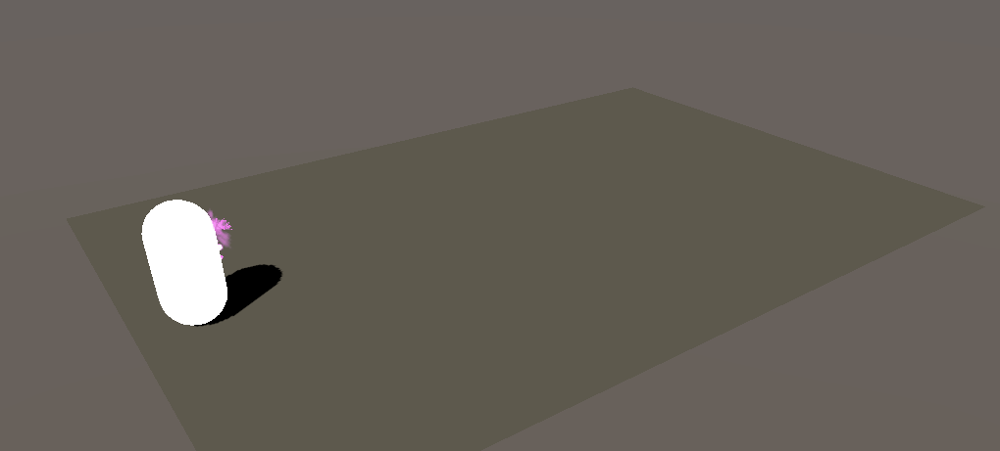

Samuel Barbeau
Contact
samuel.brb19@gmail.com
06-71-79-37-35
Présentation
Bonjour je suis actuellement en recherche d'emploi dans le développement de jeu vidéo. J'aime apprendre de nouvelles choses que ce soit par des formations ou par moi même. J'aime travailler en groupe pour pouvoir créer des projets plus ambitieux.
Expérience
Personnel d'entretien parc et piscine
juillet 2020 - août 2020
Camping la prairie - St-Hilaire de Riez
Assistant rotativiste
juillet 2019 - septembre 2019
Centre d'Impression de Presse de l'Ouest - St-Lô
Capacités
Html / Css
Portfolio
JEU

Splash-It est un jeu 3D qui a été réalisé lors d'un projet étudiant de fin d'année en collaboration avec la classe de Game Art dans ce projet je me suis occupé des tirs des joueurs, de l'apparition de la peinture sur le sol et de l'affichage des scores.

Project Tron est un jeu 3D qui reprend l'univers du film. On se retrouve dans une arène où l'on doit détruire les motos des adversaires en les faisant passer à travers la trainée de lumière qui retrace notre chemin je me suis occupé de la gestion de la caméra ainsi que certains effet de vitesse.

Battle Stereotype est un jeu mobile développé dans le cadre d'une campagne du ministère de l'éducation pour sensibiliser les collégiens aux inégalités hommes femmes. Dans ce projet je me suis occupé du déplacement des réponses par le joueur ainsi que de l'UI.

A Plus Dans Le Bus est un jeu qui a été réalisé dans le cadre de la Global Game Jam 2021 dont le thème était "lost and found". Nous incarnons un étudiant qui doit préparer ses affaires pour aller en cours et ne pas être en retard. Je me suis occupé du déplacement du joueur, d'une partie du Sound Design et de certains VFX
VFX
